Themes
- The failure of God, morality, and moral platitudes to encompass the larger and more complex aspects of the human experience
- Nihilism and hedonism as important markers in the abandonment of meaning
- Light vs. Dark
- Acceptance of self over restrictive societal conventions
- The emergence of the outsider as the insider
- Investigation and skepticism of prior societal and moral conventions
- The embrace of protest against systemic injustice, no matter the source
- Acceptance of sexuality and sex-positivity
- Shame resilience and vulnerability on display for an entire like-minded society — safe individualism
- The dark and light aspects of Utopianism — the dystopian left vs. the utopian right
- The temporary nature and artificiality of the "golden age" — the golden age as a metaphor for youth
Mahagonny
Mahagonny — Bertolt Brecht's dream city dystopia — was clearly influenced by Weimar Berlin. The work addresses a post-war financial crisis, an emerging sex trade, increasing embrace of outsiders, and a developing cabaret scene alongside new artistic movements that grew increasingly emotionally detached and nihilistic. Weill's compositional approach reflected this context. The opera's six-scene structure moves from enthusiasm about the proposed utopia toward tragedy:
- Four men arrive with traveling cases, and sing of their intention to travel to Mahagonny, where everything is beautiful.
- Two girls enter. They too are disillusioned with their old world, and hope to find material happiness in Mahagonny.
- The four men enter, smoking and drinking. They complain of the high cost of living in Mahagonny, and play a game of poker.
- The men and girls meet in a bar in Mahagonny. Life in the city has not come up to expectations. They wish to go somewhere else — Benares, for instance. But they open their newspapers and read that Benares has been destroyed.
- One of the men, Jimmy, plays the symbolic role of "God" in Mahagonny — symbolic not so much of divine authority, or even of guilty conscience, as of man-made authority. He questions inhabitants and orders them to Hell, but they respond that they already inhabit it.
- Protest marches are staged in Mahagonny, and the city goes up in flames: the plunderers are plundered. As the curtain falls, one of the girls tells the audience that there is no such place as Mahagonny.
Weimar Berlin 1919–1933
The Weimar Republic spanned the years between Germany's defeat in World War I and Hitler's rise to power in 1933. It was a period of profound contradiction: economic devastation and political instability on one side, and an extraordinary flourishing of art, music, theatre, and intellectual life on the other.
Nicknamed the "Babylon of the 20s," Berlin's city center experienced youthful vitality and explosive sexual freedom. Provocative cabaret performances, widespread drug use, hedonistic nightlife, and openly acknowledged same-sex relationships defined the era. Notable female performers like Marlene Dietrich and Anita Berber became cultural icons through their artistic work and personal lives. This was the decade of Brecht, Weill, the Isherwoods, and the Bauhaus movement.
This creative freedom became offensive to rising conservative and extreme right-wing movements, particularly Hitler and the Nazis.
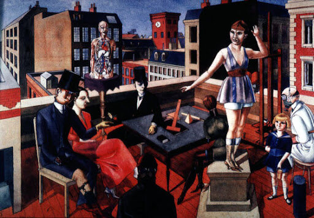
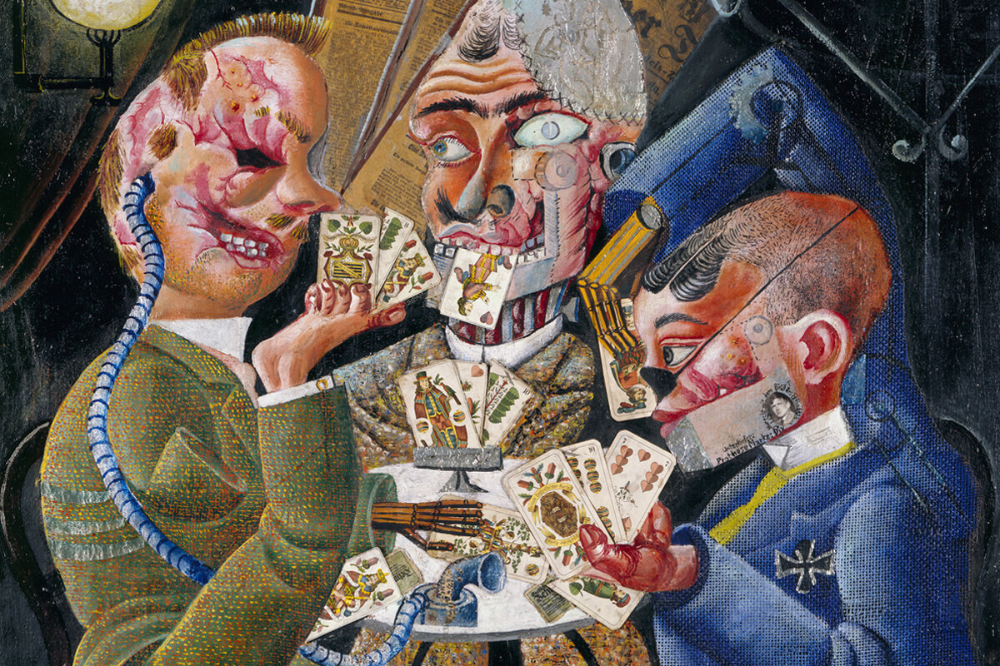
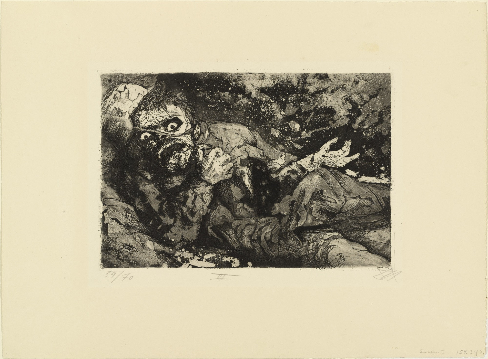
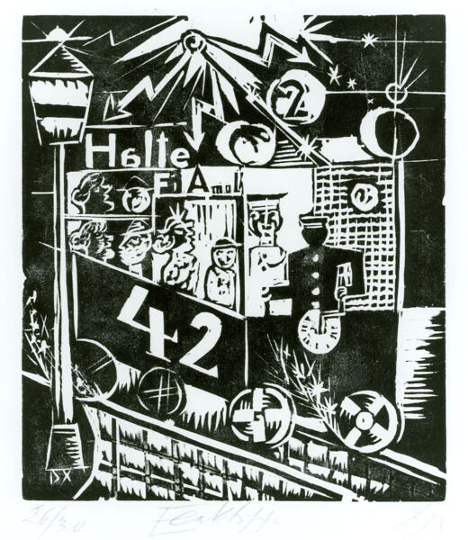
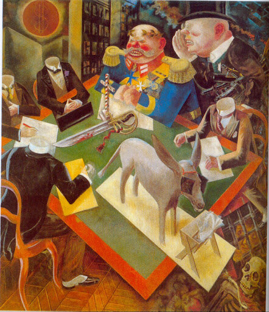
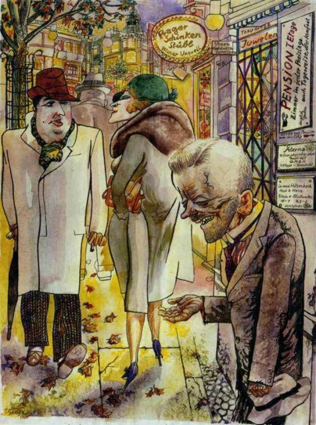
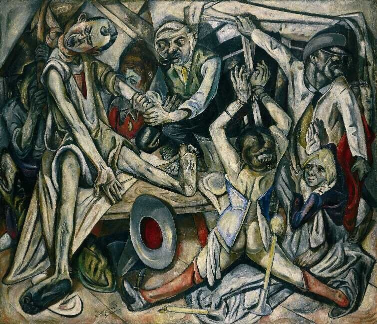
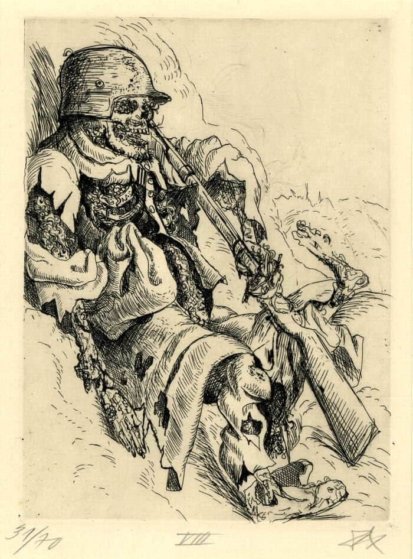
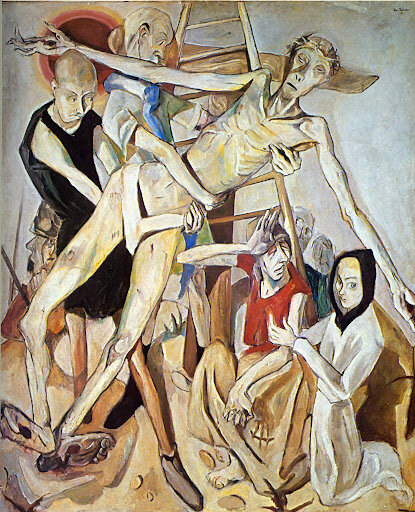
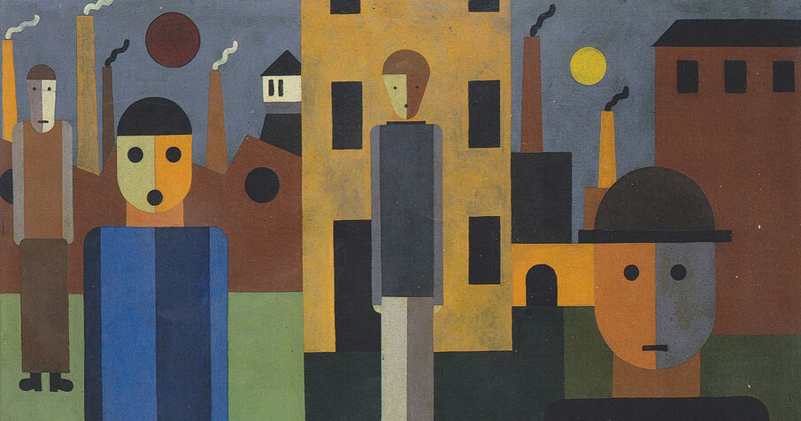
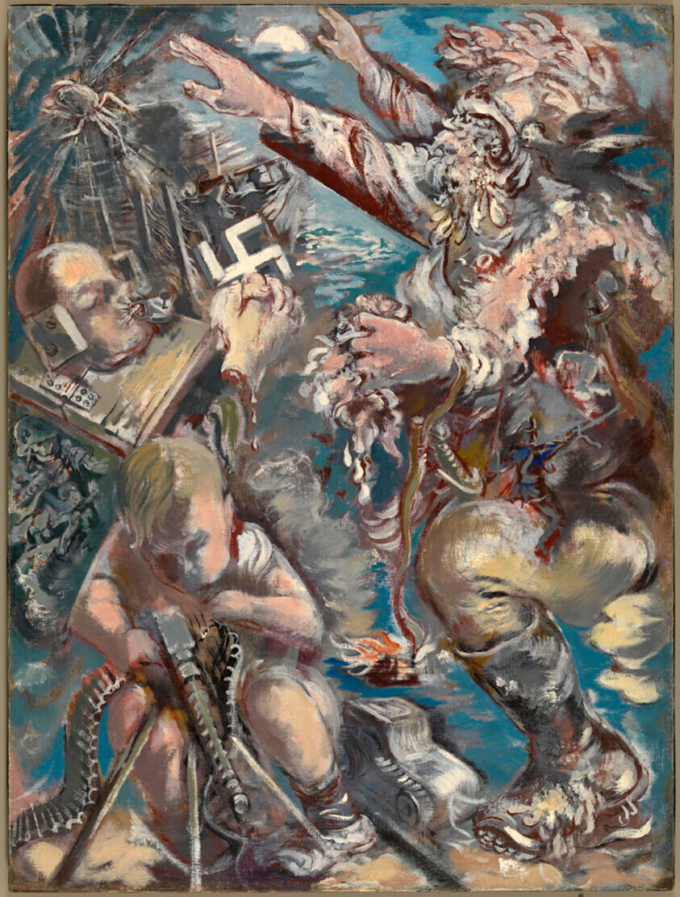
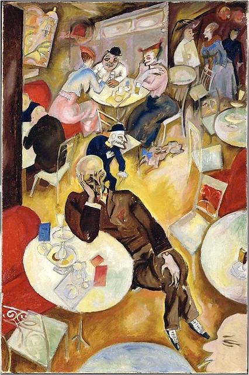
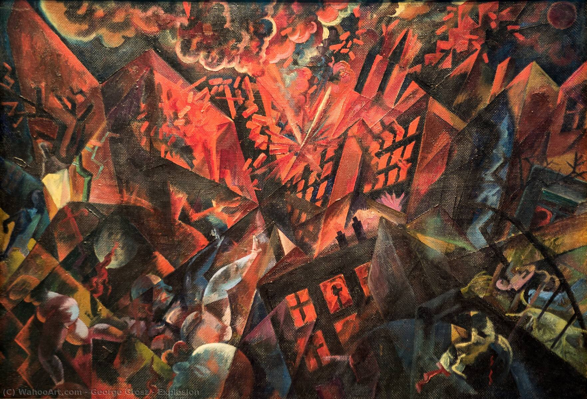
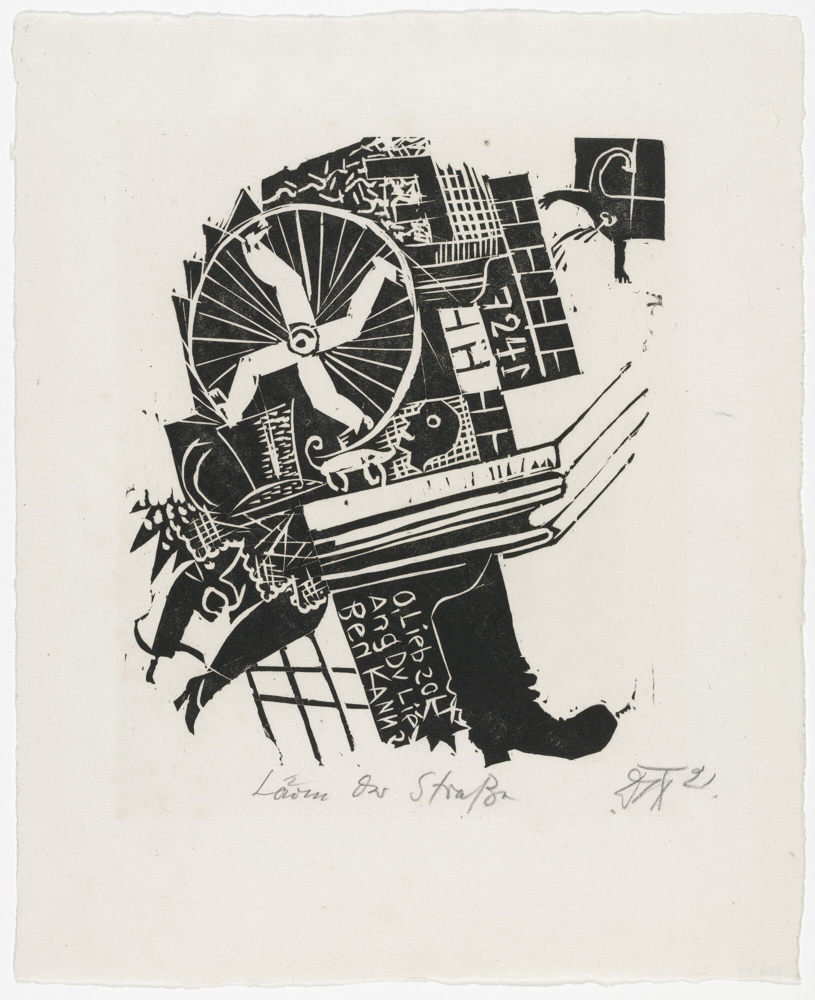
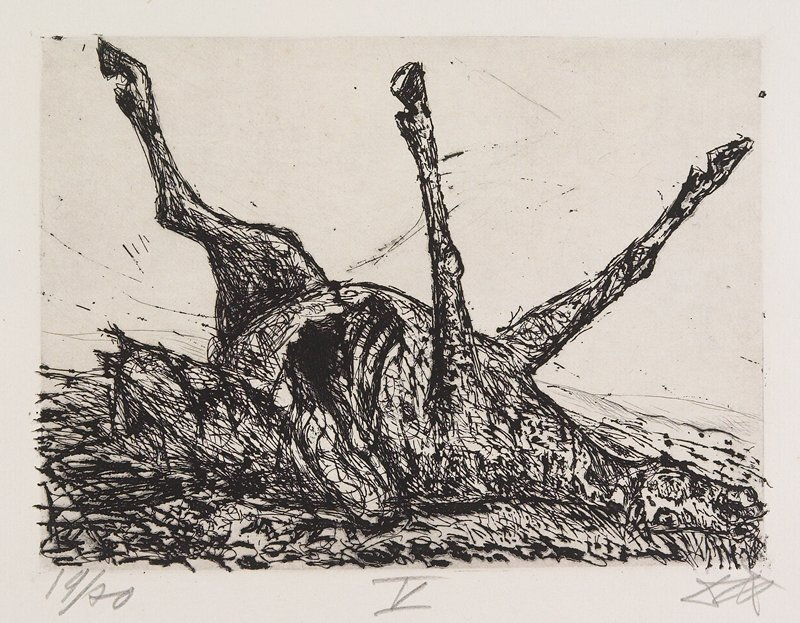
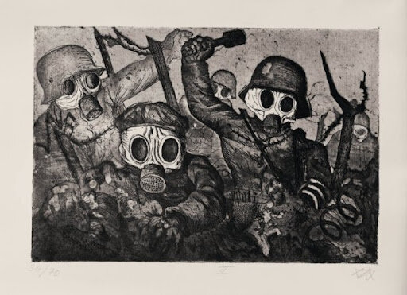
Post-War Financial Collapse
The Treaty of Versailles (ratified in 1919) compelled the Central Powers to pay war reparations to the Allies — approximately $33 billion in contemporary values. These reparation requirements destroyed the new Weimar Republic's financial stability and German currency lost all value. Multiple references to "finding the next dollar" appear throughout Mahagonny, reflecting the era's economic reality. Later in the 1920s, foreign currency influxes supported the dance hall culture for which the period is remembered.
Dance Hall and Cabaret Culture
Cabaret constituted popular live entertainment in 1920s German society, becoming recognized for its colour, freedom, and decadence. Cabaret performances often contained political ideas or undertones. The period between 1925 and 1929 has become known for its high living, vibrant urban life, and the popularization of new styles of music and dance. (Mahagonny premiered in 1927, during these Golden Years.) Having previously endured an authoritarian monarchy with tightly regulated entertainment and social activities, many Germans embraced the relaxed social environment of late Weimar.
Entertainment in the cabarets of Berlin and Munich often revolved around two themes: sex and politics. As the 1920s progressed, this evolved into open nudity displays, with most German cabarets featuring at least some topless dancers. Certain cabarets attracted homosexual men, lesbians, and transvestites — previously forced to conceal their sexuality, these individuals seized upon the relaxed liberalism of the cabaret scene to openly display and discuss it.
Some historians propose that this extravagance may have been driven by a realization that the "Golden Age" was both artificial and temporary. Many Germans spent lavishly and celebrated intensely, aware that prosperity would not endure. Brecht and Weill make this a central theme in Mahagonny.
The Political Reaction
Weimar music, dance, and entertainment faced criticism from political radicals on both sides. Socialists viewed it as evidence of capitalist wastefulness; right-wing groups characterized it as proof of weak governance, moral collapse, and corruption. German conservatives and reactionaries despised the cabarets, regularly criticizing them through press outlets and church pulpits — though these efforts had limited impact on their popularity.
Right-wing political groups including the National Socialists routinely attacked cabarets, despite many members and some leaders frequenting them. They portrayed cabarets as "corrupt melting pots, filled with racial and ethnic groups as well as dangerous political and social ideas."
Weill's Hybrid Sound-World
Weill was substantially influenced by the Jazz Age. Throughout his career, he connected classical concert music with popular dance hall styles. His marriage to popular singer Lotte Lenya and collaborations with Bertolt Brecht pushed this hybrid approach further into what became recognizably "Weill."
Weill's First Collaboration with Brecht
Mahagonny initiated numerous Brecht/Weill collaborations, including the renowned Dreigroschenoper (The Three-Penny Opera), an adaptation of John Gay's The Beggar's Opera featuring songs that became standards. While The Three-Penny Opera contains widely recognized numbers, Mahagonny has its own popular standard in "Alabama Song," which has been covered by The Doors and David Bowie, among others.
The Sex Trade in Weimar Berlin
Due to the deregulation of prostitution and fiscal collapse after the war, the sex trade and sex-positivity boomed in Weimar Berlin. The Weimar sex reform movement (1919–1933) aimed to expand sexual and social freedoms for men and women — providing working-class access to birth control, reforming laws that prohibited abortion, and recognizing all sexual orientations, including homosexuality.
In July 1919, the Institute of Sexual Research (Institut für Sexualwissenschaft) — the first of its kind — was founded by Magnus Hirschfeld. Hirschfeld was a German Jewish physician and sexologist who advocated for social recognition and against legal persecution of gay, bisexual, and transgender individuals. The Institute educated the public about sex and sexuality, offering comprehensive instruction. Nazi Party ascendance in January 1933 terminated the movement; many supporters faced persecution, imprisonment, or forced migration.
Neue Sachlichkeit (New Objectivity)
The post-war artistic movement critiqued preceding expressionism and repudiated the war. Brecht explicitly criticized expressionism as "constrained and superficial." He argued that while Germany possessed a new parliament, it lacked parliamentarians; in literature, delight in ideas existed without new ideas; in theater, a "will to drama" persisted without actual drama. Rejecting self-centered art around personal turmoil, Neue Sachlichkeit artists abandoned expressionist self-involvement and romantic longings. Weimar intellectuals, in general, made a call to arms for public collaboration, engagement, and rejection of romantic idealism.
Hans Holbein's Dance of Death Woodcuts
In his production notes, Weill scholar David Drew declared Mahagonny to be a Totentanz — a Dance of Death. This exploration of non-Weimar-era art provided visually resonant and "on-brand" works for the production's visual language.
The Dance of Death by the German artist Hans Holbein (1497–1543) is a great, grim triumph of Renaissance woodblock printing. In action-packed scenes, Death intrudes upon the everyday lives of thirty-four individuals from various social strata — from pope to physician to ploughman. Death, the great leveller, lets no one escape, and tends to treat the rich and powerful with extra force. The series prefigures 18th-century satirical paintings and political cartoons.
Holbein drew the woodcuts between 1523 and 1525, while in his twenties and based in the Swiss town of Basel. Death sneaks behind a corrupt judge ignoring a poor man while assisting a wealthy one — snapping his staff, the symbol of his power, in two. Conversely, Death aids the poor ploughman, driving his horses and liberating him from toil; a glowing background church suggests heavenly destination.
Fritz Lang's Metropolis
Fritz Lang's 1927 film Metropolis is the tale of a utopian city — much like Mahagonny — built upon forced labor from a lower class. The film explores the dichotomy between technology and humanism. Released the same year as the opera, the visual style and color palette proved immediately appropriate. The use of silent film visual title imagery for signs, placards, and surtitles is a direct reference to Lang's aesthetic — whether in protest signs or other physical markings as noted in the original production notes.
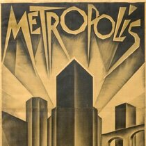
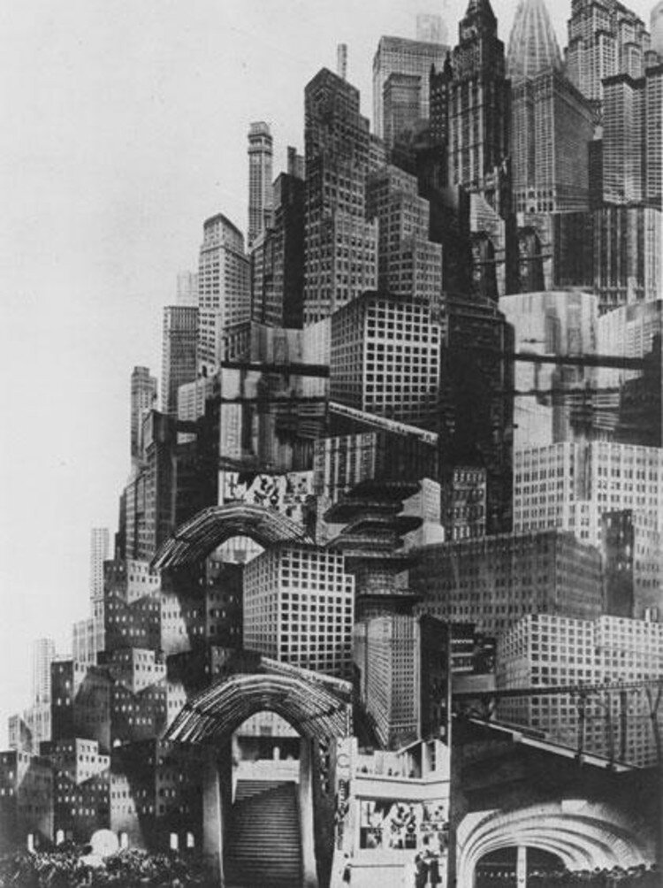
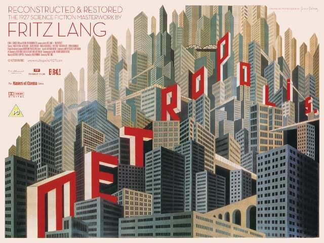
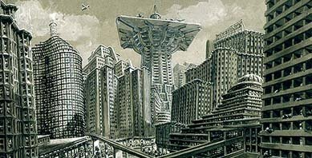
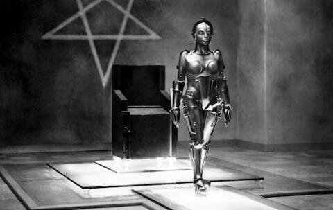
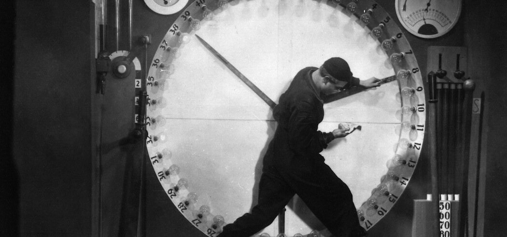
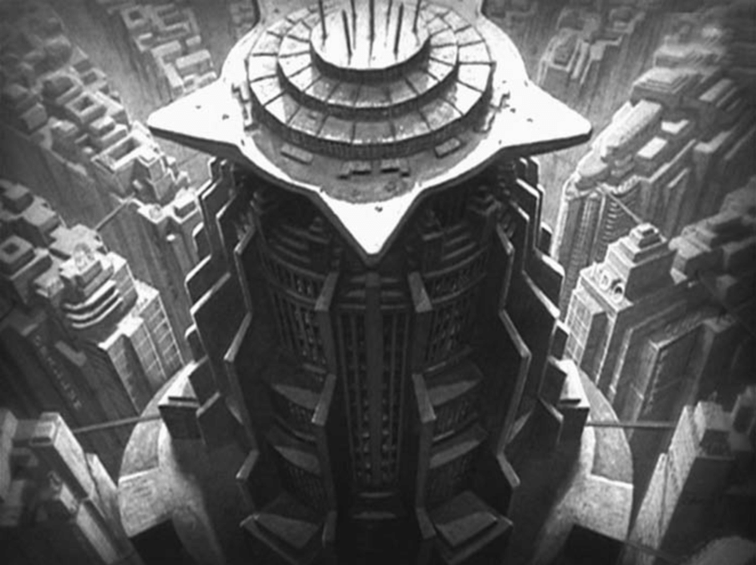
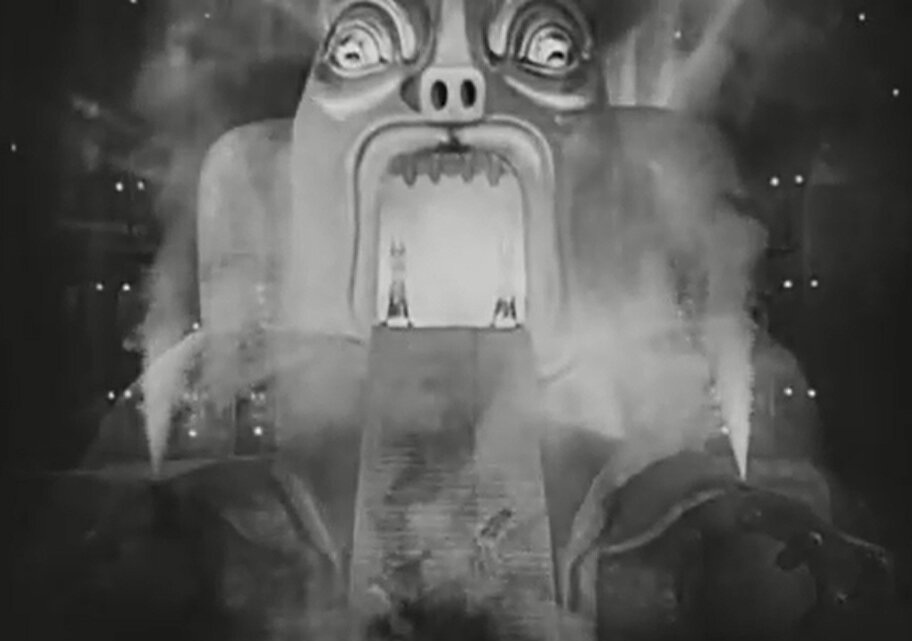
Bauhaus
Bauhaus design and architecture emphasize simplicity and function over form and ornamentation — a very specific color scheme and a profound effect on graphic design. The Bauhaus aesthetic — blacks, whites, and grays with other muted tones — forms the foundation of our color palette, with the option of a single bold accent color to punctuate moments of crisis or transformation.
Christopher Isherwood's Goodbye to Berlin
Goodbye to Berlin is a 1939 novel by Anglo-American writer Christopher Isherwood set during the waning days of the Weimar Republic. Literary critics have noted its effective capture of "the bleak nihilism of the Weimar period." John Van Druten adapted it into the 1951 Broadway play I Am a Camera; later, the 1966 Cabaret musical and 1972 film adaptation emerged.
The novel recounts Isherwood's 1929–1932 sojourn as a gay pleasure-seeking British expatriate in poverty-stricken Berlin during the twilight of the Jazz Age. Much plot detail reflects actual events; most characters were based upon real individuals. The insouciant character of Sally Bowles was based on teenage cabaret singer Jean Ross. The novel was later republished alongside Isherwood's earlier work Mr Norris Changes Trains in a 1945 collection titled The Berlin Stories.
Sally Bowles
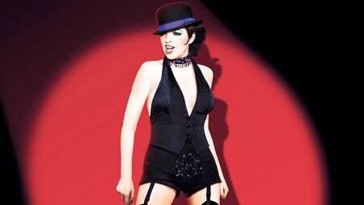
The character of Sally Bowles derived from cabaret singer Jean Ross, gaining iconic status through the Kander/Ebb musical — especially through Liza Minelli's portrayal. The musical's depiction of Sally Bowles was modeled from the iconic look of Louise Brooks, with a little Marlene Dietrich mixed in.
Louise Brooks
Mary Louise Brooks (November 14, 1906 – August 8, 1985), known professionally as Louise Brooks, was an American film actress and dancer during the 1920s and 1930s. She is regarded today as a Jazz Age icon and as a flapper sex symbol, due to her bob hairstyle that she helped popularize during the prime of her career.
Marlene Dietrich
Marlene Dietrich (27 December 1901 – 6 May 1992) was a German-born American actress and singer. Her career spanned from the 1910s to the 1980s. In 1920s Berlin, Dietrich performed on the stage and in silent films. Her performance as Lola-Lola in Josef von Sternberg's The Blue Angel (1930) brought her international acclaim and a contract with Paramount Pictures. She spent the 1950s to 1970s touring globally as a marquee live-show performer.
The Color Palette
The design employs blacks, whites, and grays with other muted tones — combining with the concept of using séance photographs as the visual inspiration for The Medium. Contrasts with a single accent color. Perhaps red.
An alternative approach involves using the Bauhaus color scheme with the blacks, whites, and muted grays for a bolder adaptation. The goal is a palette that honors the nihilistic visual language of the era while allowing the production's moments of genuine feeling to register against it.